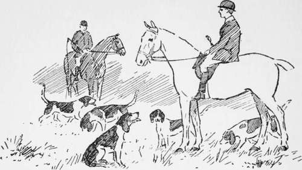

Various Hints In Riding And Driving. Part 4
Description
This section is from the book "Horses, Guns, And Dogs", by J. Otho Paget, George A. B. Dewar A. B. Portman, And A. Innes Shand. Also available from Amazon: Horses, guns and dogs.
Various Hints In Riding And Driving. Part 4
The horse that puts his head down or takes the bit in his teeth has to be treated in a different manner. Loose the reins, then pull the bit sharply through his mouth from one side to the other, which method will generally be found effective in bringing his head into the right position. The snaffle, when used in this way, can inflict considerable pain on a horse, but he must be made to understand he will be punished unless he regulates his force to your wishes rather than to his own.
There are many different varieties of bridles which have been invented for subjugating and controlling animals that have been taught to pull by bad riding, but the plain ordinary snaffle and the snaffle combined with curb will be found to answer most purposes. Have nothing to do with a bit that is covered with indiarubber, for though the principle of it may seem right to you in that it is yielding to the horse's mouth, you will find in practice it dries up all the saliva. When the mouth is harsh and dry, without any saliva or white froth, it is impossible for the rider to be on good terms with his mount. So important do I consider this that if I get on to an animal which some one with bad " hands " has just been riding, I generally give him a handful of grass to munch, and thus restore the saliva.
There are many good horsemen who swear by a gag, and will never ride a horse that attempts to pull in anything else. I refer here to the bridle that is a combination of gag and curb, the former taking the place of the snaffle. I cannot recommend the gag except for special occasions, and then it is useful for a horse that has acquired the habit of boring his head down to his knees ; but as a bit for hunting or regular riding, I consider it is opposed to the first principles of horsemanship and humanity.
In the ordinary double-rein bridle, to which I will presently return, the curb should be looked upon as an instrument of punishment or warning not to pull, and the snaffle should be the medium of conveying your wishes when the horse is on his good behaviour.
The gag presses on the corners of the mouth where you do not want it, and you must either pull the horse's head up in the air or ride on the curb. Both are severe bits, and therefore, when they are used together, you have no means of rewarding a horse for going kindly.
The gag-snaffle, or a gag and a snaffle, are reasonable bridles, and may suit some horses, but I think they are of most value to men with bad " hands," and those who are conscious of their defects in this respect would do well to make more use of them.
I am supposing you know what a gag is, but I believe many people who ride with it do not realise that they can exert nearly double the power with the reins, and should therefore use their strength with mercy.
This brings us to a consideration of the double-rein curb and snaffle, which is, in my estimation, the nearest thing to perfection in bridles that has been invented. I have, however, already said that it is not a bridle for the inexperienced horseman or the heavy-fisted, and these had better content themselves with using the single-rein snaffle.
The curb is of very little value without a noseband, but it must be neither too tight nor too loose. The horse that tries to get the advantage of you either opens his mouth very wide or keeps it tightly shut, and you must therefore fix your noseband so that he can move his jaws comfortably without opening them too much. The action of the curb makes the horse open his mouth, and you should then play lightly with the snaffle.
Take care that the noseband is not too low, or it will nip the corners of the mouth between it and the bridle, thereby causing a sore place which will irritate the horse.
The cheek of the bit should be of fair length below the bar, which should be smooth and with only a slight port. The bar that moves up and down is best, as it gives a certain amount of play, and the great object in bridling is not to allow the bit to remain long in one place.
You may have good hands, and your double-reined bridle may be just as I have described, but unless it is put on properly it will be a source of irritation to the horse and consequently unsatisfactory to the rider. I am sorry to say that a great many people do not realise the importance of this, and the first thing I do when mounting a strange horse is to look if the bridle requires adjusting. The curb should be high up in the mouth and the snaffle low. If you go into the saddle-room and look at the double-reined bridles hanging up, you will generally see them as they ought to lie in a horse's mouth, the snaffle falling loosely over the curb.
When the snaffle is too tight, and therefore high in the mouth, it cannot touch the sensitive part, and might just as well be fixed to the tail as be where it is. I have already told you to depend on the snaffle for playing on a horse's mouth, and to look upon the curb only as an aid to the former. Many grooms think it looks smarter to have the snaffle tight, and the horses have to suffer in silence.
Twenty or thirty years ago bits were much too thin, and Whyte-Melville remarks on this in his " Riding Recollections," which may perhaps have had something to do with the change. Now we seldom see a thin bit, and people have gone rather to the other extreme, so that in some instances the combined thickness of snaffle and curb is nearly as big as a man's wrist. This is, of course, too much iron to put in a horse's mouth, and I can only advise you to use your common sense in finding the happy medium.
Although I do not advise a martingale to be used regularly, it is a very powerful aid to the control of a young or fractious horse. Always have it on the curb rein, because when on the snaffle it neutralises the delicate feel you should have on a horse's mouth. Both instruments of control should be on the same rein, and then as he gives to you with the one, you can play lightly with the other as a reward for good behaviour.
See that the rings of the martingale are not big enough to slip over the rings of the bit, or in jumping a fence you may find the horse's head tied down with very unpleasant results.
A first-rate horseman can do things that are beyond the power of others, and I know one who rides all his horses in martingales ; but my friend who reads this chapter would, I feel certain, be better without it, or at least until he has had rather more experience. A bad rider is often confirmed in the error of his ways by using a martingale, and his horse is tortured at the same time.
A " pelham " is a bridle of which I have had very little experience, but though the principle of it is to my mind all wrong, I can quite understand that a man with bad hands might find it useful.
Do not have your reins too thick, or you will not be able to get the requisite delicate touch, and see that they are kept properly supple.
If you want to be smart, do not have the headpiece of the bridle buckled on to the bit, but let it be sewn. I have no explanation to give for this, but I know that it does not look well, and with that you must be satisfied.

Continue to:
- prev: Various Hints In Riding And Driving. Part 3
- Table of Contents
- next: Chapter V. Various Hints In Riding And Driving. Part 5